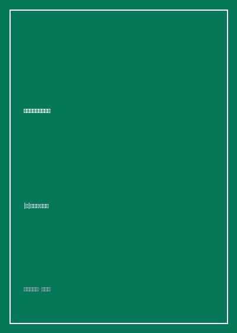

《法官能为民主做什么》

总体观点
宪法的最高使命从来不是冷冰冰地固守两百年前刻在羊皮纸上的古老字面死板含义，而是‘让我们的民主制度在瞬息万变的技术与现代商业社会中真正良好运转’（Making Our Democracy Work）。法官不是孤立的技术官僚，而是民主治理巨轮上负责纠偏与维护各部门动态平衡的关键守护者。
尖锐反驳保守派斯卡利亚大法官倡导的‘原旨主义’（Originalism）。布雷耶指出，试图去揣摩十八世纪制宪先贤在面对互联网算法、反垄断跨国巨头或全球反恐战争时的‘原初意图’纯属刻舟求剑的虚妄。司法裁判必须立足于宪法核心价值原则（促进公民参与、保障平等自由与分权制衡），结合现实后果做出务实的常识性考量。
系统探讨最高法院在与国会立法、总统行政以及联邦与州之间互动时的‘司法谦抑与能动的分寸感’。在涉及高科技专利、环境科学评估等高度专业领域，法院应当保持对专业行政监管机构专业裁决的适度尊重；但在涉及公民基本言论投票权与防止政治独裁的宪政红线问题上，法院必须勇敢挺身而出、坚守民主防波堤。
核心观点
-
1. 活的宪法与积极自由原则
宪法条文充满了高度抽象的崇高原则（如正当法律程序、言论自由）。法官的职责不是咬文嚼字当字典考据家，而是让这些古老原则在面对当下的无人机监控、基因专利与网络言论时依然能够有效保护公民的‘积极自由’与政治参与权利。
面对警察在未经搜查令的情况下使用GPS定位仪秘密跟踪嫌疑人汽车数周的争议，法官不应纠结十八世纪有没有GPS，而应坚守第四修正案保护公民免受政府无理侵犯隐私的原则本质。 -
2. 后果主义的司法现实主义考量
一个好的判决必须认真评估其裁决在现实社会生活中的实际落地‘后果’。如果一个纯理论上符合抽象法学概念的判决，在现实中会导致上万家企业破产、行政程序全面瘫痪或诱发大范围社会混乱，法官就必须反思其判决推理的前提是否存在重大偏差。
在审理全国性空气清洁法案排放标准诉讼时，布雷耶主张在环境效益与工厂关闭工人失业成本之间进行严密的比例原则权衡，而非采纳极端环保主义的全盘一刀切停工诉求。 -
3. 对行政监管机构的专业尊重
法官不是全知全能的超级神仙。面对核反应堆安全阀门标准或医药临床试验统计学门槛等高度复杂专业技术问题，九位坐在华盛顿大理石高楼里的法官应当谦虚退让，给予拥有数千名科学家的环保局（EPA）或食药局（FDA）以合理的行政自由裁量空间（雪佛龙准则）。
在争议巨大的电信反垄断拆分案中，法院尊重联邦通信委员会（FCC）经济学家的专业频段竞争评估报告，避免因外行法官的盲目拍脑袋裁决扼杀全国宽带网络基建铺设。 -
4. 在战火与反恐危机中守住人身保护令底线
面对9·11后的国家安全紧急恐慌，白宫常常以‘战时总司令特权’为由无限期无罪关押嫌疑人并剥夺其见律师的权利。布雷耶等大法官在‘布迈丁诉布什案’中力挽狂澜，裁决即使是关塔那摩基地的外国非公民嫌犯，同样享有美国宪法赋予的人身保护令大权。
判决书庄严宣告：‘即便在战争狂澜的至暗时刻，宪法依然在发光；行政部门绝不能通过将战俘关押在海外孤岛建立一个凌驾于司法审查之上的法外治权黑洞。’ -
5. 司法公信力依赖公民对法治的共同信仰
最高法院既没有指挥枪杆子的军队，也没有管辖钱袋子的国库，其全部裁决之所以能被三亿公民与强力总统执行，纯粹依赖全社会对法治公正性的崇高道义信任。法官必须谨言慎行，努力通过跨党派的协商妥协凝聚广泛共识，避免法庭沦为党争政治斗兽场。
回顾1832年切罗基印第安人领地案中杰克逊总统曾嚣张宣称‘马歇尔大法官做出了判决，现在就让他派军队自己去执行吧’的历史羞辱，警示最高法院必须悉心呵护来之不易的宪法权威神圣性。
全书结构
-
引言 宪法的誓言：让民主制度运转起来
阐明布雷耶实用主义司法哲学的总纲，提出法官应当如何扮演民主制度的助产士与润滑剂，界定全书三大论述维度。
引用制宪先贤麦迪逊在《联邦党人文集》中关于各权力部门相互制约以防野心膨胀的经典论述，拉开现代司法实战序幕。 -
第一编 宪法的起源与合作：国会与法院的互动
回顾马伯里诉麦迪逊案司法审查权的确立，探讨法院如何通过理解国会立法的‘真实目的’（Purposive approach）解释充满歧义的法案。
通过剖析联邦民权法案在基层招工歧视中的适用争议，演示法官如何通过查阅国会听证辩论记录，推导立法者旨在打破就业玻璃天花板的根本初心。 -
第二编 总统与法院：国家安全与公民自由的平衡
深入二战日裔拘禁营悲剧与后9·11时代关塔那摩军事法庭诉讼，剖析战时紧急状态下司法如何勇敢制衡总统行政权力的恶性膨胀。
反思最高法院当年在‘是松诉合众国案’中对罗斯福行政命令可耻屈从的历史耻辱，立誓后代法官绝不再为战时种族排外政策背书。 -
第三编 联邦与各州：分权制衡与专业行政机构
探讨现代行政国家崛起背景下，法院如何处理联邦优先权、州权自治以及对环境保护署等独立专业监管机构的技术专业性司法审查。
解构各州针对转基因农作物种植自设禁令与联邦农业部统一安全认证之间的法律冲突，展现联邦制在维护单一国内大市场中的法理协调艺术。 -
第四编 结语：超越原旨主义的生机勃勃之法
全书思想总结，系统与保守派原旨主义辩论，呼吁法官在坚守民主自由核心价值的同时，勇敢拥抱真实世界变化，维护法律的生命力。
向美国公众发出诚挚呼吁：唯有当每一位普通公民都理解法治的真谛并在日常生活中主动参与民主协商时，宪法才能成为永不褪色的自由盾牌。